Обладнання EXPOTRANS
Наявність власної інженерно-конструкторської бази дозволяє підприємству не лише експлуатувати обладнання, а й самостійно виготовляти та програмувати великогабаритні верстати під конкретні виробничі процеси.
Намотувальний станок для композитних виробів
Призначений для роботи з карбоновим або склоровінгом.
використовується для:
- намотування армуючих волокон
- локального підсилення конструкцій.
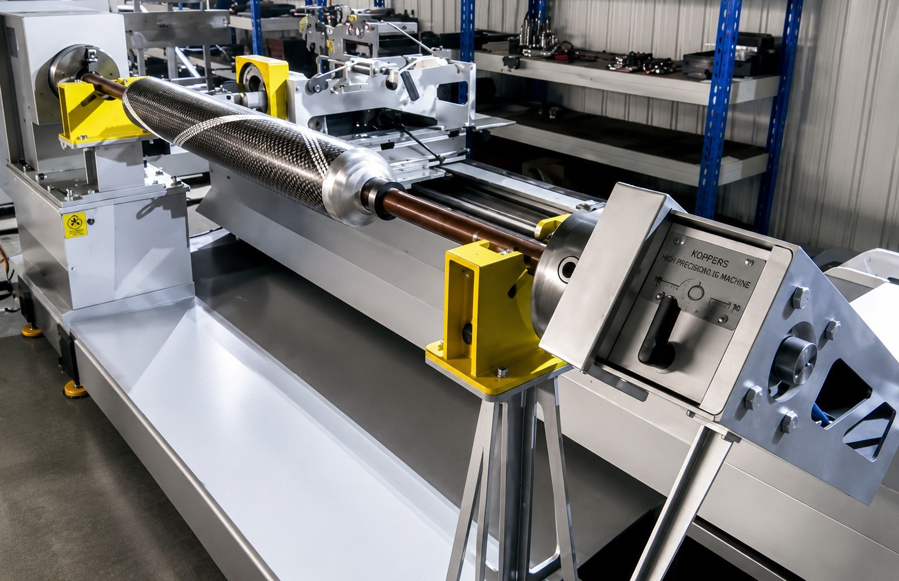
Фрезерні трьох та чотирьох-координатні ЧПУ
Станки для механічної обробки складних геометричних форм стаціонарним та обертовим методом.
Габаритні можливості обладнання:
- робоча зона: 2100 × 5100 мм
- висота обробки: 450 мм
- максимальний діаметр деталі при обробці обертових форм: до 900 мм
Таке обладнання дає змогу обробляти як площинні, так і просторово складні деталі з високою точністю.
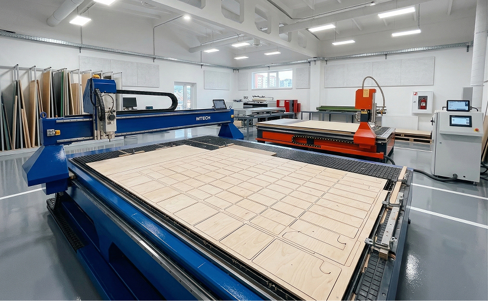
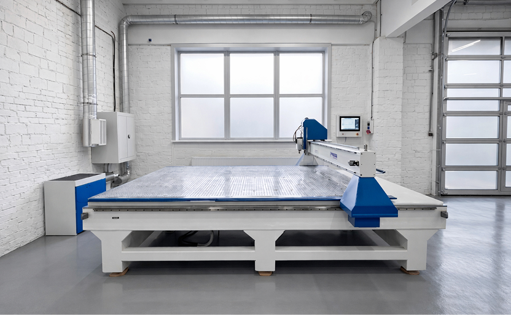
Власний парк ЧПУ-станків для обробки пінополістирольних матеріалів
Обладнання налаштовується під конкретні задачі виробництва та забезпечує точне формування геометрії для подальшої доробки або інтеграції в композитні конструкції.
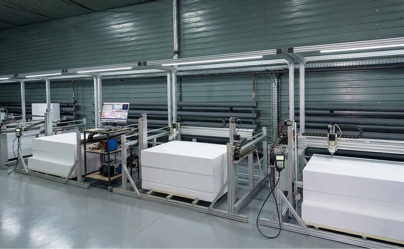
Лазерні ЧПУ-станки для різання фанери
Обладнання використовується для:
- виробництва допоміжної оснастки конструктивних елементів
- монтажних елементів
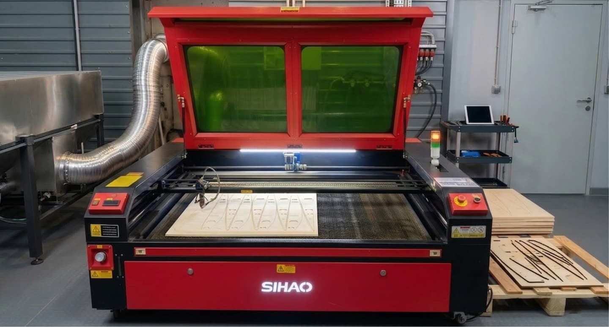
Токарні верстати
використовують для:
- механічної обробки металевих елементів
- алюмінієвих та інших конструктивних компонентів
- підготовки вставок, втулок, кріпильних і допоміжних елементів
Це обладнання дає можливість закривати частину супутніх механічних задач власними силами без передачі на стороннє виробництво.
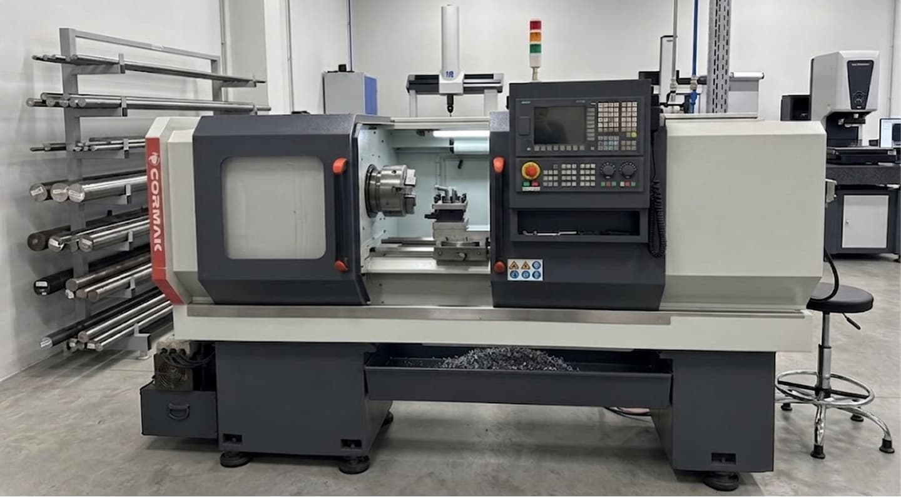
Термопечі для полімеризації
Підприємство оснащене великогабаритними термопечами для полімеризації композитних виробів:
Піч №1
- габарити: 9160 × 24480 × 2300 мм
- гранична температура: до 80°C
- теплова потужність: 67,5 кВт
Піч №2
- габарити: 9160 × 12300 × 2300 мм
- гранична температура: до 160°C
- теплова потужність: 67,5 кВт
Додаткові печі
Окрім великогабаритних камер, підприємство має 4 додаткові печі 6 × 6 м, які можуть використовуватися для обробки менших виробів та вузлів.
Можливість термічних процесів спеціального призначення.
Наявне обладнання та компетенція персоналу дозволяє виконувати не лише полімеризацію композитних виробів, а й, за потреби, застосовувати процеси вулканізації для виробів і вузлів, де це передбачено технічними вимогами проєкту.
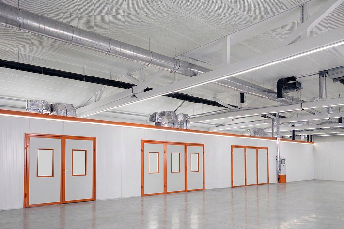
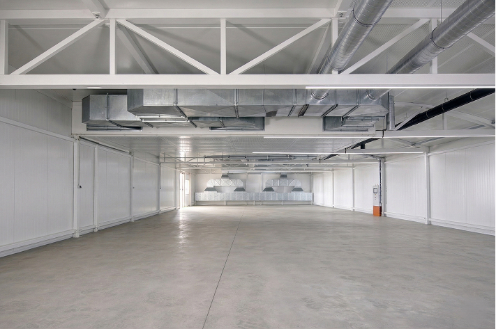
Вакуумні та спеціалізовані технологічні системи
Підприємство оснащене комплексом вакуумного обладнання для реалізації процесів вакуумної формовки композитних виробів.
До складу систем входять вакуумні насоси, магістралі, елементи автоматики допоміжне оснащення для формування вакуумного пакета, створення контрольованого розрідження та стабільного супроводу процесу полімеризації.
Окремим напрямом інженерних компетенцій підприємства є можливість розробки та виготовлення автоклавного обладнання. На поточному етапі у серійному виробничому процесі цей метод не використовується, однак наявна інженерна та виробнича база дозволяє опрацьовувати рішення у сфері автоклавних систем.
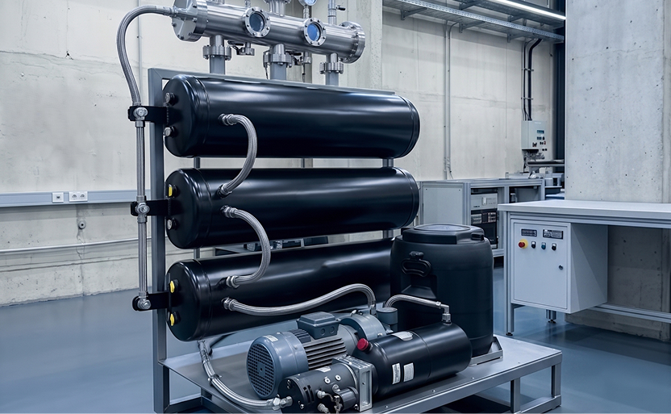
Малярні камери
Використовуються для нанесення двох-компонентних композитних фінішних покриттів.
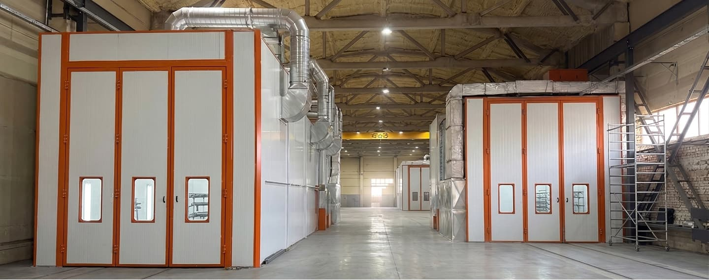
Власна дільниця 3D-друку
50 принтерів, що використовується для:
- виготовлення допоміжних елементів
- друку вузлів, вставок
Наявність власного 3D-друку скорочує цикл підготовки виробництва та підвищує гнучкість у реалізації нестандартних технічних рішень.
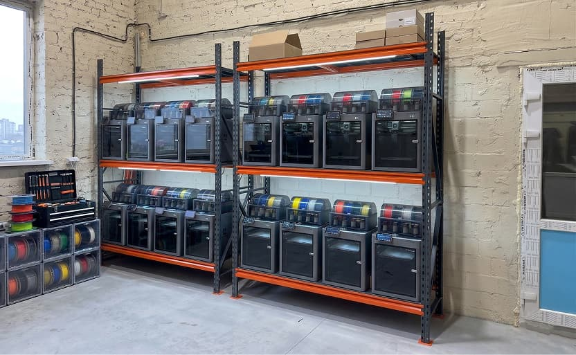
3D-сканери та reverse engineering
У виробничому циклі застосовуються 3D-сканери, що дають змогу:
- оцифровувати наявні вироби та геометрично складні об’єкти
- виконувати reverse engineering
- відтворювати геометрію для подальшого проєктування, масштабування або виготовлення оснастки
Це особливо важливо при роботі з великогабаритними або складнопрофільними деталями, які можуть бути відтворені через поділ на окремі секції з подальшим збиранням в єдиний об’єкт.
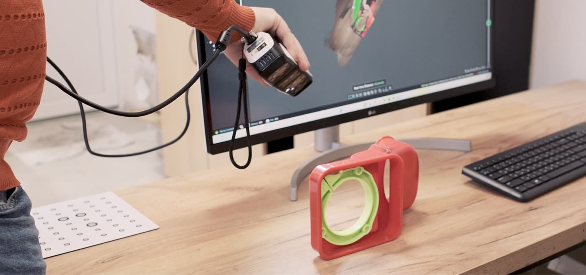
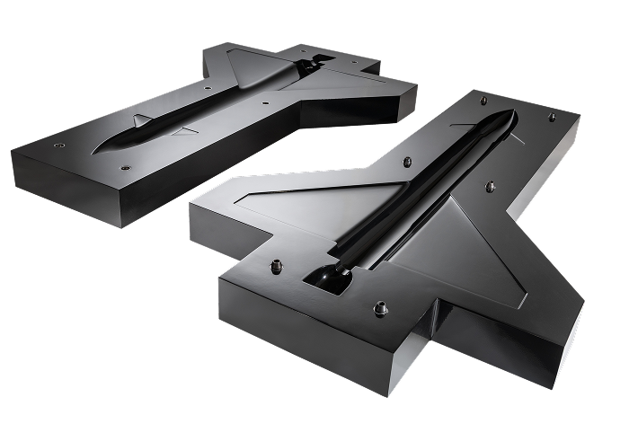
Маєте питання?
Залиште Ваші контакти і ми зв’яжемось з Вами